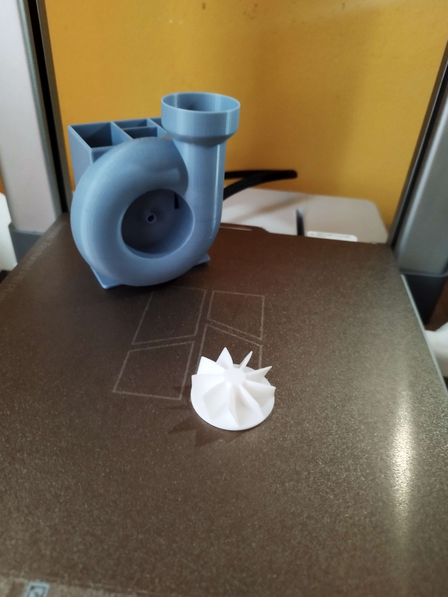
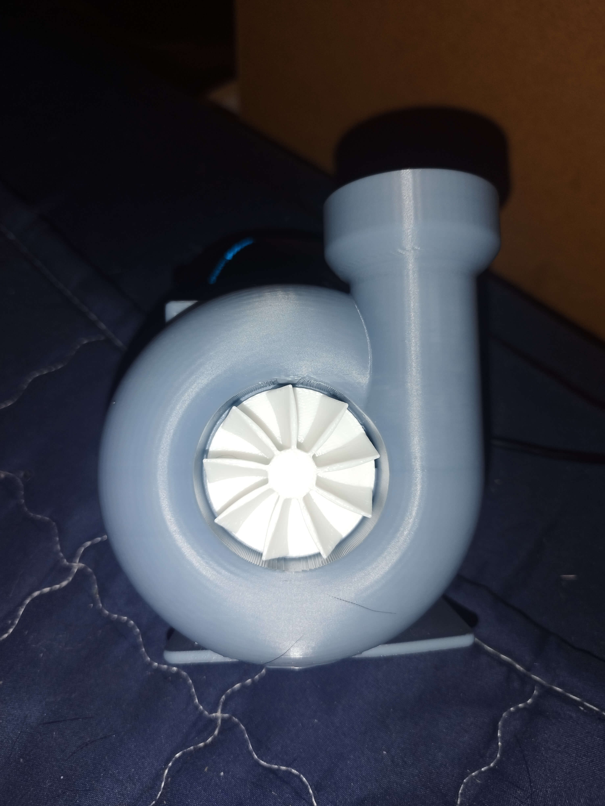
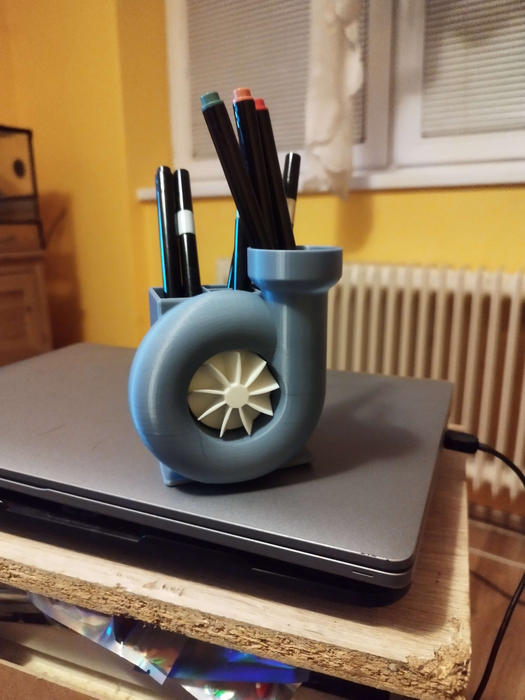

→ Stojan na perá TURBO ←
Stojan na perá s funkčnou vrtulkou, musí byť súčasť stola každého nadšenca áut.





Stojan na perá s funkčnou vrtulkou, musí byť súčasť stola každého nadšenca áut.
Svorka na všetky možné účely, od lepenia dreva až po kadejakú fixáciu. Tlačené z odloného PETG materiálu, vyššia svetelná aj mechanická odolnosť.
Držiak na mobil, ktorý si vďaka tomu, že je vyrobený ako Klúčenka vezmeš kdekoľvek. Pri farbách je originalita vítaná.
Ak ťa už nebaví pracne vytláčať zubnú pastu, tento šikovný pomocník to vybaví za teba. Súčasť už aj našej kúpelne.
Tento flexibilný drak určite poteší vaše dieťa, dvojfarebný a plne pohyblivý.
Lampa pre milovníkov ťažkých strojov a bagrov. LED umiestnené v lyžici. Možnosť vyrobiť aj iné značky ako CAT.
Klip na sáčky proti otvoreniu, otestovaný v našej kuchyni, veľmi praktická vec. Vyrobený z odolnejšieho PETG materiálu.
Klip na sáčky proti otvoreniu, otestovaný v našej kuchyni, veľmi praktická vec. Vyrobený z odolnejšieho PETG materiálu.
Box na perá a menšie veci so štruktúrou včelieho plátu s uzatváracím mechanizmom. Vhodné aj do kabelky alebo rupsaku.
Sada medailý tlačená zo špeciálneho Silk(lesklého) materiálu. Pre deti na športové turnaje ideálne.
Stavebnica športového autíčka, vytlačená v peknom ráme vhodná ako darček. Možné tlačiť aj bez rámu. Na kompletizáciu potrebné lepidlo.
Trošku originálneho tuningu, a hneď je z tejto legendy štýlová hračka. Kolesá sú funkčné, materiál PLA.
Niečo pre milovníkov dvojkolesových strojov. Tento krásny Harley s funkčným volantom a kolesami určite musí byť v tvojej zbierke. Pre labužníkov možné tlačiť gumy z TPU.


Tu máme rovnaký knife ako "Butterfly knife exclusive", akurát s jemnou farebnou obmenou.


Ďalší butterfly knife, avšak tento raz čepel robená z translucent PETG, a zbytok je PLA. PETG má trošku dlhšiu tlač, a dlhší post-processing, ale stojí to zato.


Ahojte, dnes sa tlačil nový fidget v štýle motýlika. Výsledok, a
diely z ktorých sme fidget skladali uvidíte na fotkách.
Dúfam že sa vám páči.